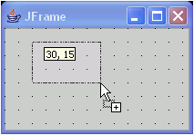

Layout managers help control the size and position of all components in a container. In containers using null layout, each component defines its own bounds to determine size and location.
The visual editor provides grid markers that help you visually align components, and you can snap components to the grid. When you set to null the layout for an existing container that was previously using a layout manager, the Design view does not change in appearance. The visual editor calculates and sets the bounds for each component using the setBounds() method.
- To specify universal settings for how the null grid markers display,
see Specifying grid display preferences for
containers. To customize the spacing of the grid markers for the selected
container, open the Customize Layout
 window and specify the
width, height, and margin sizes for the grid.
window and specify the
width, height, and margin sizes for the grid. - To resize a component in null layout, click and drag the component's
handles:

You can also set the size of a component as you add it from the palette. Simply hold down the left mouse button when you drop the component in the Design view, and drag the mouse pointer. In any other layout manager, you cannot size a component as you add it.
